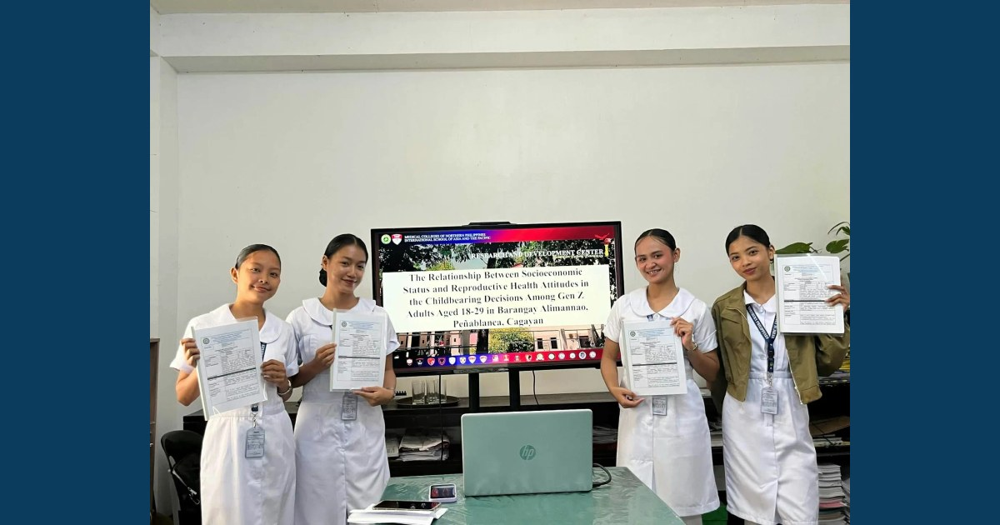

MCNP BS Nursing Students Strengthen Research Competencies Through Proposal Defense

MCNP conducted the BS Nursing Research Proposal Defense on November 16, 2026, strengthening nursing students’ research competencies, scholarly inquiry, and understanding of evidence-based healthcare practice.
Read full article